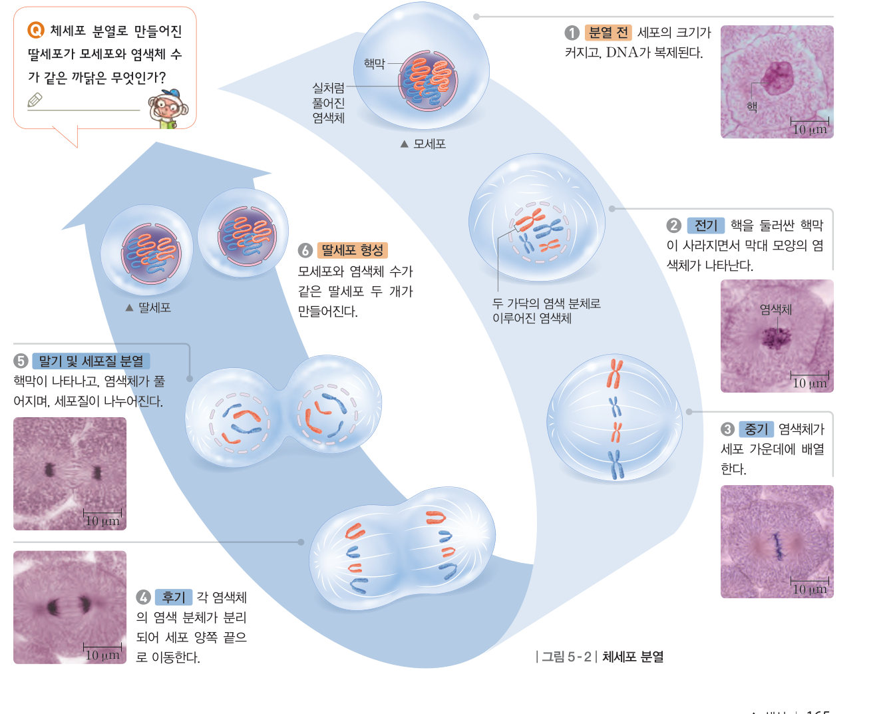
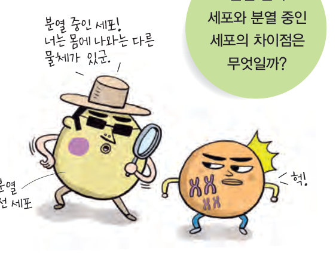
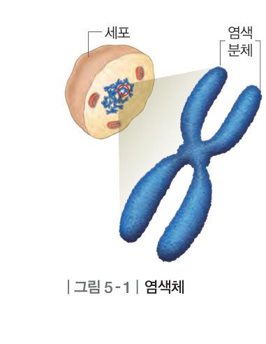
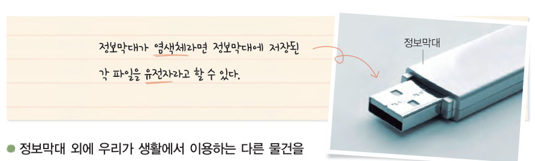
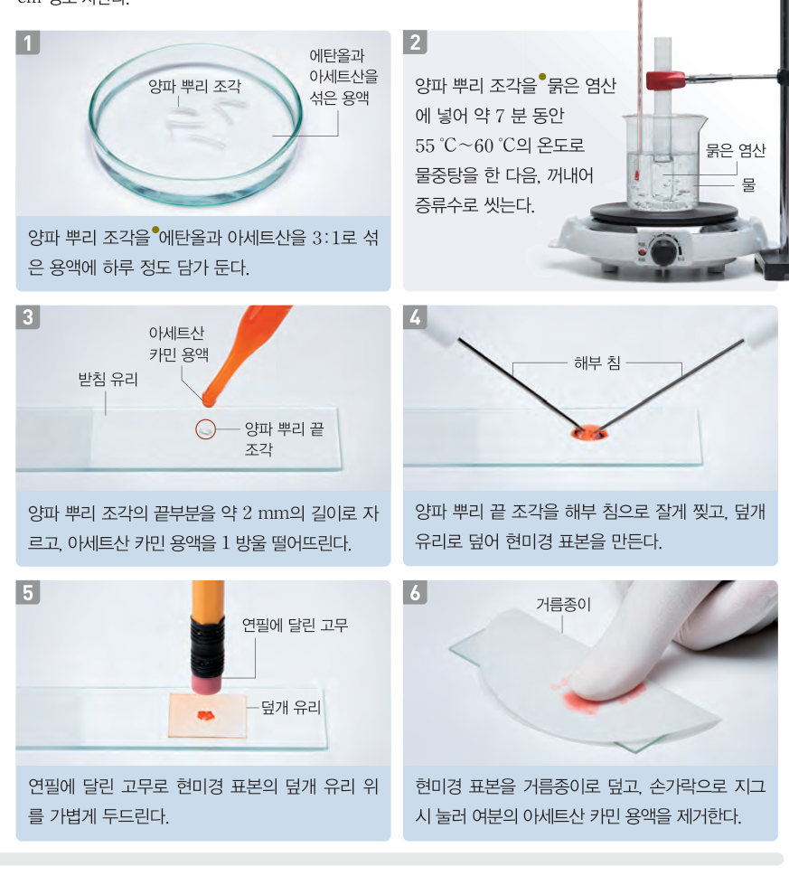

분열 전의 세포와 분열 중인 세포는 무엇이 다를까? 염색체와 유전자의 관계를 정보막대에 비유해 알아보고, 체세포 분열 애니메이션을 단계별로 넘기며 염색체가 어떻게 행동하는지 따라가 보자.
몸을 이루는 세포에는 대부분 핵이 있고, 핵 속에는 생물의 특징을 결정하는 유전 물질이 들어 있다. 그런데 분열 중인 세포에서는 핵이 사라지고, 유전 물질이 꼬이고 뭉쳐서 만들어진 막대 모양의 염색체가 나타난다. 이때 염색체는 두 개의 가닥으로 이루어져 있으며, 각각의 가닥을 염색 분체라고 한다.
염색체를 구성하는 유전 물질은 DNA이다. DNA에는 생물의 특징에 대한 여러 유전 정보가 담겨 있으며, 각각의 유전 정보를 유전자라고 한다. 같은 종의 생물에서는 생식세포를 제외한 모든 세포에서 염색체 수가 같다. 예를 들어 사람의 몸을 이루는 세포에는 46 개의 염색체가 들어 있다.


생물의 몸을 이루는 세포를 체세포라 하고, 체세포 한 개가 두 개로 나누어지는 것을 체세포 분열이라고 한다. 체세포 분열이 일어나기 전에는 모세포의 핵 속에 염색체가 실처럼 풀어진 상태에서 DNA가 복제된다. 체세포 분열이 진행되면 두 가닥의 염색 분체로 이루어진 염색체가 나타나고, 염색 분체가 분리되어 각 딸세포에 들어간다. 이때 두 염색 분체는 한쪽의 DNA가 복제되어 만들어진 것이므로 서로 같은 유전 정보를 담고 있다. 따라서 체세포 분열로 만들어진 두 개의 딸세포는 각각 모세포와 유전 정보, 염색체의 수와 모양이 같다.

| 평가 기준 | 스스로 평가 |
|---|---|
| 탐구 기능 탐구 과정을 옳게 수행하였는가? | |
| 탐구 기능 체세포 분열이 일어나는 동안 염색체의 행동 변화를 구분하였는가? | |
| 인성 탐구 활동에 적극적으로 참여하였는가? |
| ⑴ (가)의 염색체는 DNA가 복제된 상태이다. | |
| ⑵ (나)는 염색체가 세포 가운데에 배열되었으므로 후기이다. | |
| ⑶ (다)는 각 염색체의 염색 분체가 분리되어 세포 양쪽 끝으로 이동하는 시기이다. | |
| ⑷ (라)는 딸세포로, 모세포와 염색체의 모양과 수가 다르다. |
| ⑴ 고정은 세포 분열을 활발하게 유지하기 위한 처리 과정이다. | |
| ⑵ 해리는 세포가 잘 분리되도록 조직을 연하게 하는 처리 과정이다. | |
| ⑶ 양파 뿌리 끝에는 생장점이 있어 체세포 분열이 활발히 일어난다. | |
| ⑷ 아세트산 카민 용액을 떨어뜨리는 것은 세포를 한 겹으로 얇게 펴기 위한 것이다. |
| 평가 기준 | 스스로 평가 |
|---|---|
| 염색체와 유전자의 관계를 설명할 수 있다. | |
| 체세포 분열의 특징을 염색체의 행동으로 설명할 수 있다. |